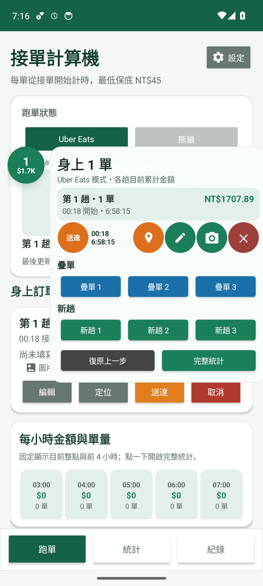
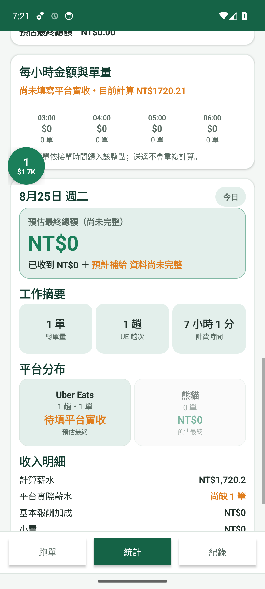
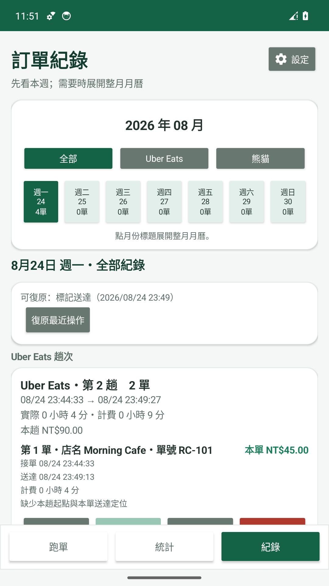
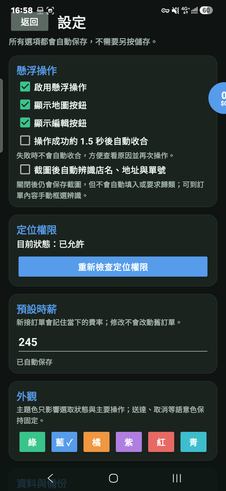

新趟、疊單與逐單送達
懸浮面板可選新趟或疊單 1～3 張，並直接操作指定訂單的送達、取消、定位與內容。
為台灣外送工作者設計
新趟、疊單、逐單送達、快速截圖、店名與單號辨識、趟次軌跡和收入統計一次整理。資料以保存在你的手機為主。
v1.0.16 已送交 Google Play 封閉測試。請使用測試名單內的 Google 帳號加入；舊版使用者仍可使用 v1.0.10 遷移版匯出備份。

騎車時也能快速操作
懸浮點同時顯示身上單量與目前總額，展開後可快速接單、精確送達與查看各趟資訊。
懸浮面板可選新趟或疊單 1～3 張，並直接操作指定訂單的送達、取消、定位與內容。
懸浮視窗會暫時隱藏並保存目前畫面；辨識結果明確時，自動填入店名、單號與地址。
記錄一趟的起始點和各張訂單的送達點，依實際送達順序顯示整趟導航軌跡。
同畫面查看五個時段的金額與單量，並整理實際收入、小費、加成、獎勵與補給差額。
v1.0.16 實際畫面
下列畫面使用虛構店家、測試單號與測試金額，沒有真實外送資料。



計算方式
每張單都各自套用同一套公式。疊三單的期間，三張單會同時累積。
換到 Google Play 也不丟資料
Google Play 封閉測試・版本 1.0.16
Android 8.0 以上，目前僅限台灣與 ridercalc 測試名單內的 Google 帳號。